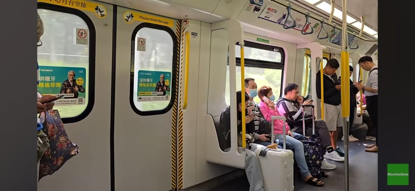
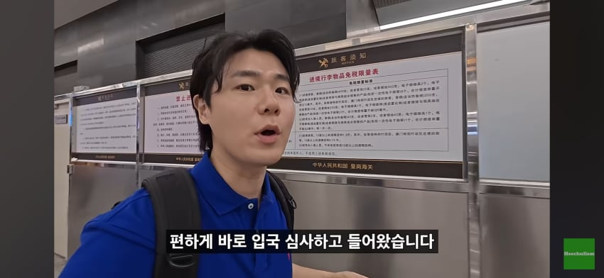
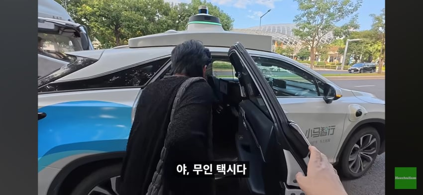
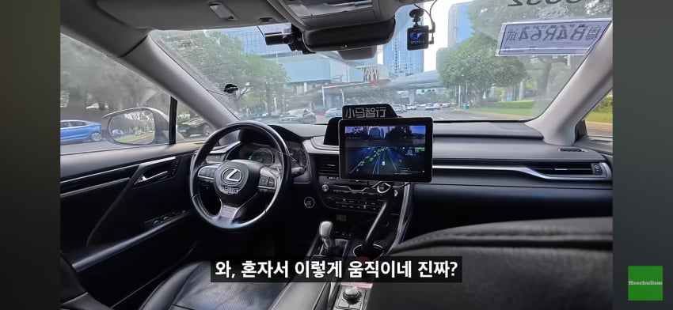
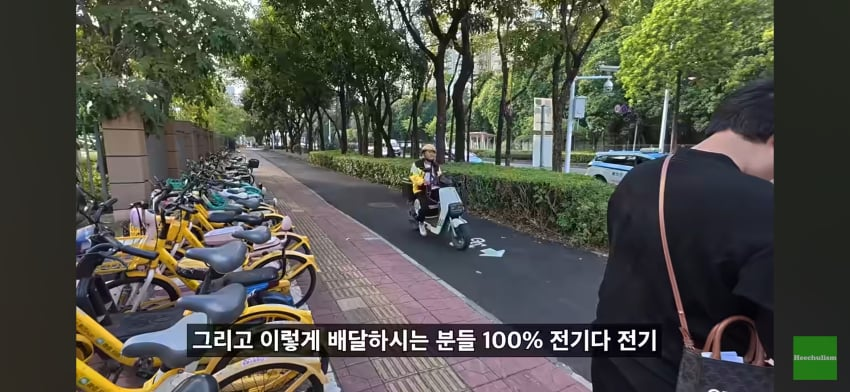
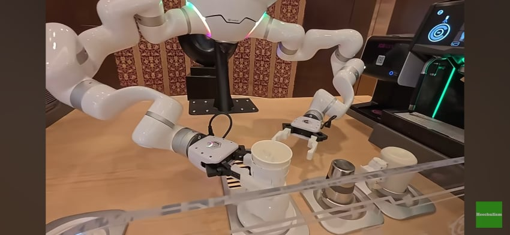
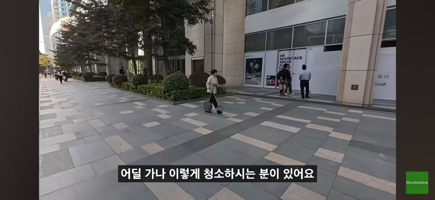
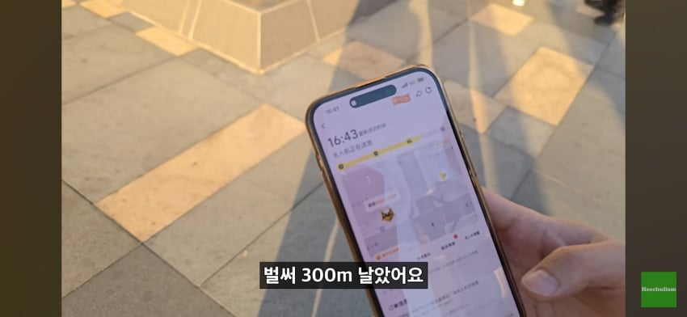
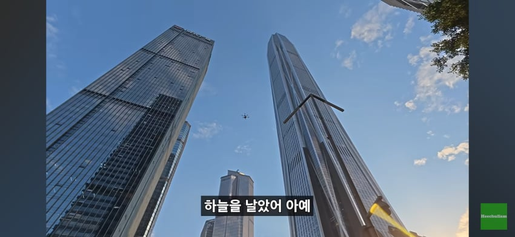
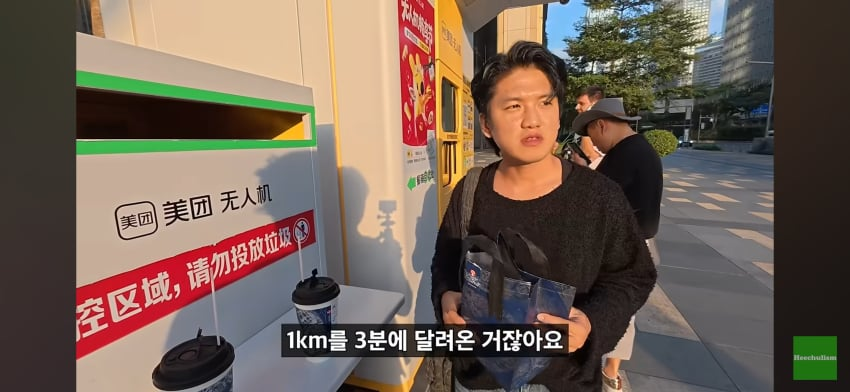
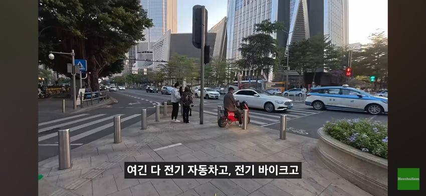
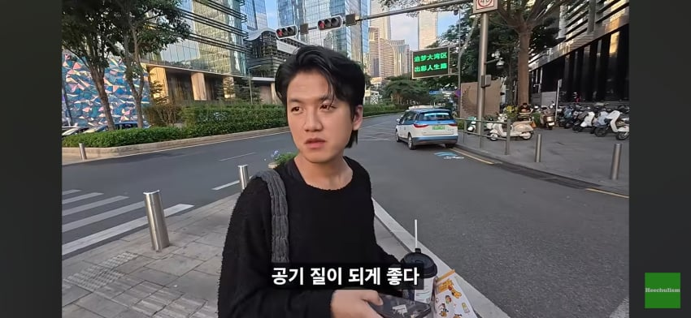
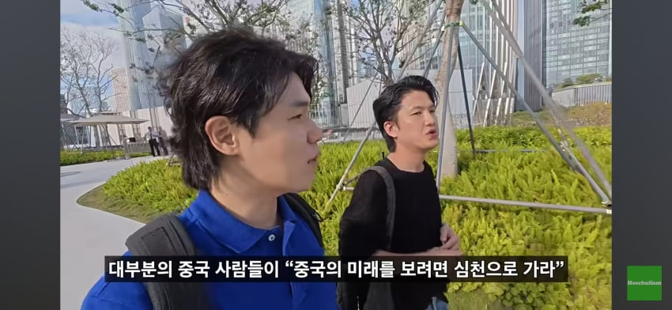
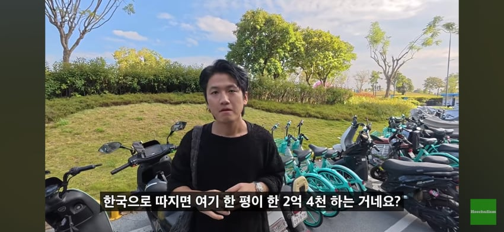
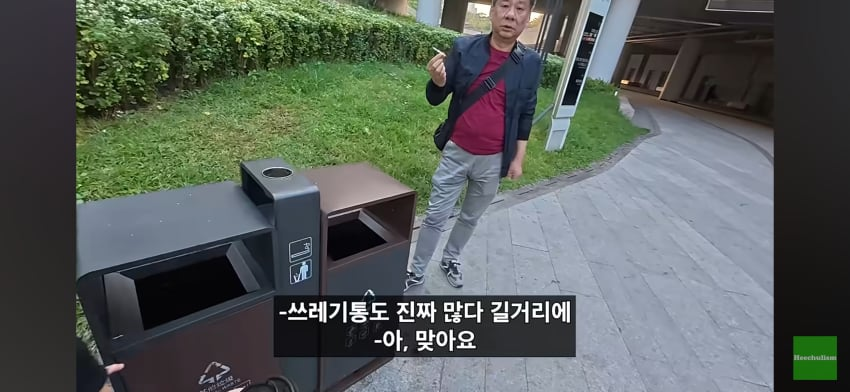
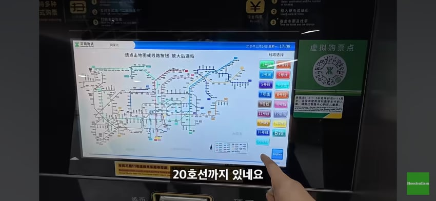
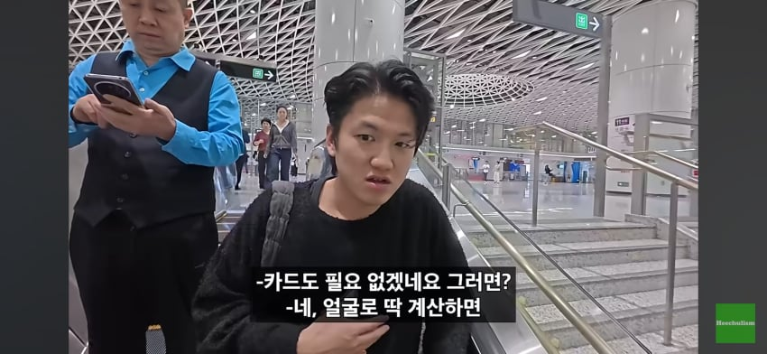
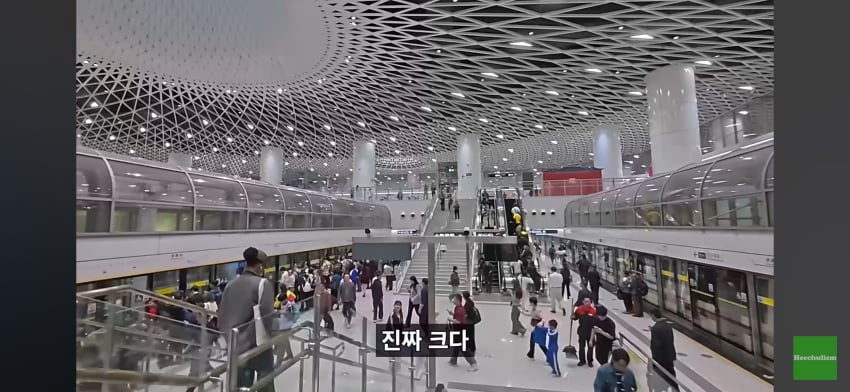
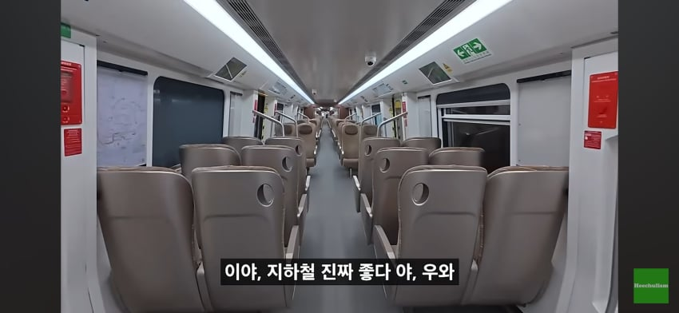
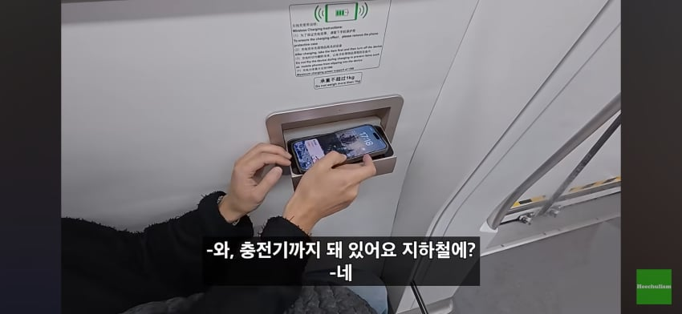
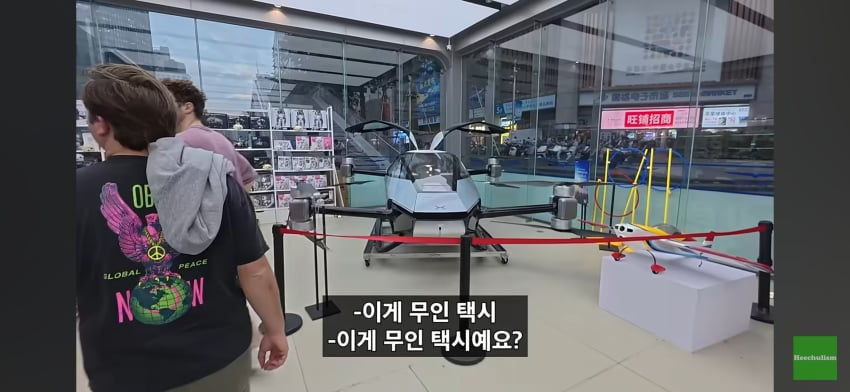
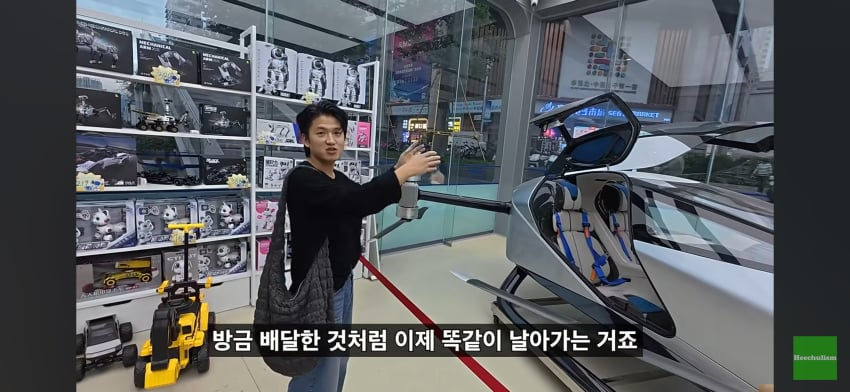
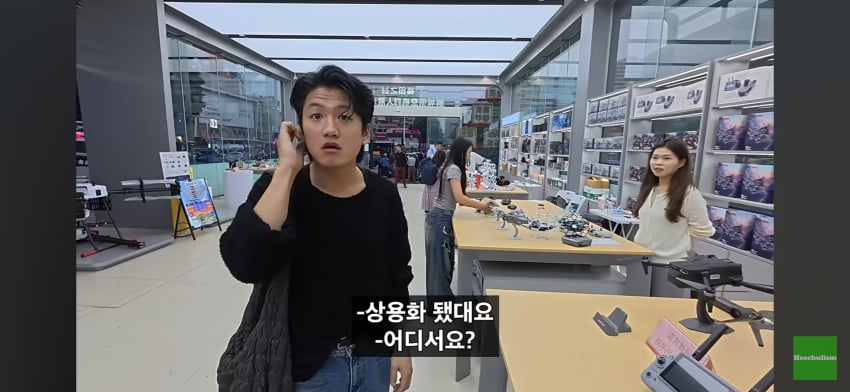
ㄷㄷ
댓글
수집 당시 댓글 490개
· ㅇㅇ · 11.21 12:00:39
ㅇㅇ · 11.21 00:49:31
そうだね · 11.21 00:49:36
· 가츠 · 11.21 11:31:13
ㅇㅇ · 11.21 00:49:42
중티난다
ㅇㅇ · 11.21 00:58:11
ㅇㅇ · 11.21 01:02:33
ㅇㅇ · 11.21 01:05:52
· SonyXperia · 11.21 08:26:00
· ㅇㅇ · 11.21 10:34:56
히이잉 · 11.21 01:05:53
ㅇㅇ · 11.21 01:06:32
ㅇㅇ · 11.21 01:06:46
ㅇㅇ · 11.21 01:18:49
ㅇㅇ · 11.21 01:23:32
ㅇㅇ · 11.21 01:44:45
ㅇㅇ · 11.21 01:55:54
ㅇㅇ · 11.21 02:12:00
ㅇㅇ · 11.21 02:12:04
ㅇㅇ · 11.21 02:16:52
ㅇㅇ · 11.21 02:17:16
· ㅇㅇㅇ · 11.21 03:30:54
· ㅇㅇ · 11.21 03:42:31
ㅇㅇ · 11.21 02:31:37
ㅇㅇ · 11.21 02:43:46
ㅇㅇ · 11.21 02:43:49
엘갤러 · 11.21 03:08:00
ㅇㅇ · 11.21 03:10:26
ㅇㅇ · 11.21 03:20:21
ㅇㅇㅇ · 11.21 03:25:47
ㅇㅇ · 11.21 03:35:07
· ㅇㅇ · 11.21 03:53:07
도떼녀 · 11.21 03:36:34
ㅇㅇ · 11.21 03:42:19
ㅇㅇ · 11.21 03:46:21
문명인은
중국추종
ㅇㅇ · 11.21 03:46:30
ㅇㅇ · 11.21 03:46:44
대중국
ㅇㅇ · 11.21 03:56:48
ㅇㅇ · 11.21 04:02:32
ㅇㅇ · 11.21 04:05:57
ㅇㅇ · 11.21 04:08:02
ㅇㅇ · 11.21 04:35:00
메우메우기여어 · 11.21 04:40:51
끼얏호우 · 11.21 04:43:11
· 끼얏호우 · 11.21 04:43:56
ㅇㅇ · 11.21 04:48:18
ㅇㅇ · 11.21 04:57:03
ㅇㅇ · 11.21 05:10:28
ㅇㅇ · 11.21 05:11:50
판매자 · 11.21 05:15:36
ㅇㅇ · 11.21 05:31:53
ㅇㅇ · 11.21 05:55:14
ㅇㅇ · 11.21 05:58:40
ㅁㅁ · 11.21 06:48:07
ㅇㅇ · 11.21 06:49:14
ㅇㅇ · 11.21 06:52:24
ㅇㅇ · 11.21 06:57:42
ㅇㅇ · 11.21 07:16:25
ㅇㅇ · 11.21 07:27:47
· ㅇㅇ · 11.21 08:24:50
ㅇㅇ · 11.21 07:50:09
ㅇㅇ · 11.21 08:03:22
· ㅇㅇ · 11.21 08:26:40
ㅇㅇ · 11.21 08:11:15
· ㅇㅇ · 11.21 08:11:20
ㅇㅇ · 11.21 08:11:19
· ㅇㅇ · 11.21 08:22:49
· ㅇㅇ · 11.21 08:23:33
ㅇㅇ · 11.21 08:22:06
ㅇㅇ · 11.21 08:57:10
ㅇㅇ · 11.21 08:59:49
ㅇㅇ · 11.21 09:12:05
ㅇㅇ · 11.21 09:26:55
ㅇㅇ · 11.21 09:40:20
hawaii50 · 11.21 09:44:38
ㅇㅇ · 11.21 09:45:41
ㅇㅇ · 11.21 09:59:01
ㅇㅇ · 11.21 10:01:29
ㅇㅇ · 11.21 10:05:06
ㅇㅇ · 11.21 10:26:22
Japan_ · 11.21 10:30:18
채피 · 11.21 10:30:29
ㅇㅇ · 11.21 10:31:54
ㅇㅇ · 11.21 10:32:08
ㅇㅇ · 11.21 10:34:43
ㅇㅇ · 11.21 10:35:13
ㅇㅇ · 11.21 10:35:32
ㅇㅇ · 11.21 10:36:33
꿍까 · 11.21 10:38:39
ㅇㅇ · 11.21 10:49:43
· ㅇㅇ · 11.21 11:27:26
ㅇㅇ · 11.21 10:59:48
ㅇㅇ · 11.21 11:03:54
ㅇㅇ · 11.21 11:11:27
ㅇㅇ · 11.21 11:18:48
Doll · 11.21 11:26:48
ㅇㅇ · 11.21 11:54:10
김중갤 · 11.21 12:05:47
ㅇㅇ · 11.21 12:09:35
ㅇㅇ · 11.21 12:10:12
ㅇㅇ · 11.20 23:16:51
ㅇㅇ · 11.20 23:17:16
ㅇㅇ · 11.20 23:17:37
ㅇㅇ · 11.20 23:17:43
· ㅇㅇ · 11.20 23:17:47
· ㅇㅇ · 11.20 23:18:59
· ㅇㅇ · 11.20 23:21:02
· ㅇㅇ · 11.20 23:23:03
아이스 · 11.20 23:19:27
ㅇㅇ · 11.20 23:19:44
ㅇㅇ · 11.20 23:20:31
ㅇㅇ · 11.20 23:22:20
갓중국
대중국
ㅇㅇ · 11.20 23:22:21
· ㅇㅇ · 11.21 00:24:52
ㅇㅇ · 11.20 23:22:37
· ansav454 · 11.20 23:35:17
· 이야 · 11.21 01:31:45
· ㅇㅇㅇ · 11.21 03:22:33
· ㅇㅇ · 11.21 10:34:17
아바나잘감자 · 11.20 23:22:40
· 아바나잘감자 · 11.20 23:23:51
· ㅇㅇ · 11.20 23:40:26
· ㅇㅇ · 11.21 02:36:20
ㅇㅇ · 11.20 23:23:30
· ㅇㅇ · 11.20 23:32:34
· ㅇㅇ · 11.20 23:36:24
· ㅇㅇ · 11.21 01:01:43
· ㅇㅇㅇ · 11.21 03:24:45
ㆁㆁ · 11.20 23:23:57
ㅇㅇ · 11.20 23:24:03
꿍까 · 11.20 23:24:05
ㅇㅇ · 11.20 23:26:36
삼갤러 · 11.20 23:30:10
삼갤러 · 11.20 23:30:17
ㅇㅇ · 11.20 23:34:41
ㅇㅇ · 11.20 23:34:54
· ㅇㅇ · 11.20 23:35:04
00 · 11.20 23:35:22
ㅇㅇ · 11.20 23:35:52
ㅇㅇ · 11.20 23:37:28
ㅇㅇ · 11.20 23:39:44
ㅇㅇ · 11.20 23:40:09
ㅇㅇ · 11.20 23:42:50
· ㅇㅇ · 11.20 23:42:55
· ㅇㅇ · 11.20 23:43:03
· ㅇㅇ · 11.20 23:43:10
· ㅇㅇ · 11.20 23:43:20
· ㅇㅇ · 11.20 23:43:37
· ㅇㅇ · 11.20 23:43:43
ㅇㅇ · 11.20 23:43:10
ㅇㅇ · 11.20 23:47:23
ㅇㅇ · 11.20 23:49:43
· 소설쟁이 · 11.21 00:21:12
· 소설쟁이 · 11.21 00:22:02
ㅇㅇ · 11.20 23:51:38
ㅇㅇ · 11.20 23:51:44
ㅇㅇ · 11.20 23:52:21
· ㅇㅇ · 11.20 23:53:30
· ㅇㅇ · 11.20 23:55:20
ㅇㅇ · 11.20 23:54:00
ㅇㅇ · 11.20 23:54:01
· ㅇㅇ · 11.20 23:54:17
. · 11.20 23:55:00
ㅇㅇ · 11.20 23:55:53
· SonyXperia · 11.21 08:19:56
ㅇㅇ · 11.20 23:56:18
ㅇㅇ · 11.20 23:58:46
ks910204 · 11.20 23:59:57
ㅇㅇ · 11.21 00:01:01
ㅇㅇ · 11.21 00:04:10
ㅇㅇ · 11.21 00:04:43
ㅇㅇ · 11.21 00:05:20
ㅇㅇ · 11.21 00:06:53
ㅇㅇ · 11.21 00:07:05
ㅇㅇ · 11.21 00:07:18
ㅇㅇ · 11.21 00:07:19
ㅇㅇ · 11.21 00:07:32
ㅇㅇ · 11.21 00:07:45
ㅇㅇ · 11.21 00:08:42
OO · 11.21 00:11:11
ㅇㅇ · 11.21 00:15:46
· 소설쟁이 · 11.21 00:25:04
· ㅇㅇ · 11.21 01:44:03
ㅇㅇ · 11.21 00:20:54
· ㅇㅇ · 11.21 00:21:41
· ㅇㅇ · 11.21 10:51:24
ㅇㅇ · 11.21 00:21:05
ㅇㅇ · 11.21 00:23:15
ㅇㅇ · 11.21 00:25:04
ㅇㅇ · 11.21 00:27:42
ㅇㅇ · 11.21 00:30:44
· ㅇㅇ · 11.21 11:15:27
ㅇㅇ · 11.21 00:31:58
· ㅇㅇ · 11.21 10:52:06
· ㅇㅇ · 11.21 11:16:33
ㅇㅇ · 11.21 00:34:03
박피터 · 11.21 00:34:29
알카 · 11.21 00:41:19
ㅇㅇ · 11.21 00:43:32
ㅇㅇ · 11.21 00:49:14
· ㅇㅇ · 11.20 23:56:28
· ㅇㅇ · 11.21 00:00:01
· ㅇㅇ · 11.21 00:00:12
· ㅇㅇ · 11.21 00:00:27
· ㅇㅇ · 11.21 00:30:06
· ㅇㅇ · 11.21 00:30:57
ㅇㅇ · 11.20 23:00:57
ㅇㅇ · 11.20 23:01:07
· ㅇㅇ · 11.20 23:08:08
· ㅇㅇ · 11.20 23:17:23
ㅇㅇ · 11.20 23:01:19
ㅇㅇ · 11.20 23:01:27
ㅇㅇ · 11.20 23:01:36
· ㅇㅇ · 11.20 23:01:45
ㅇㅇ · 11.20 23:01:47
ㅇㅇ · 11.20 23:01:48
ㅇㅇ · 11.20 23:01:48
ㅇㅇ · 11.20 23:01:58
ㅇㅇ · 11.20 23:02:30
· ㅇㅇ · 11.20 23:03:40
· ㅇㅇ · 11.20 23:36:49
ㅇㅇ · 11.20 23:02:32
· 시타 · 11.20 23:45:35
ㅇㅇ · 11.20 23:02:37
ㅇㅇ · 11.20 23:02:44
ㅇㅇ · 11.20 23:02:52
ㄹㄹ · 11.20 23:03:02
ㅇㅇ · 11.20 23:03:12
· ㅇㅇ · 11.20 23:04:25
ㅇㅇ · 11.20 23:03:22
· ㅇㅇ · 11.20 23:03:28
· ㅇㅇ · 11.20 23:03:35
· ㅇㅇ · 11.20 23:04:05
· ㅇㅇ · 11.20 23:05:38
· ㅇㅇ · 11.20 23:05:52
· 시타 · 11.20 23:50:37
· 시타 · 11.20 23:52:42
· ㅇㅇ · 11.20 23:53:49
· ㅇㅇ · 11.21 01:34:38
ㅇㅇ · 11.20 23:03:38
· ㅇㅇ · 11.20 23:06:32
· ㅇㅇ · 11.20 23:15:11
· ㅇㅇ · 11.20 23:59:10
ㅇㅇ · 11.20 23:04:34
· ㅇㅇ · 11.20 23:06:14
· ㅇㅇ · 11.20 23:07:07
· ㅇㅇ · 11.20 23:15:42
· ㅇㅇ · 11.20 23:16:29
· ㅇㅇ · 11.20 23:20:05
ㅇㅇ · 11.20 23:05:03
ㅇㅇ · 11.20 23:05:17
산봉우리 같은 나라
ㅇㅇ · 11.20 23:05:31
· ㅇㅇ · 11.20 23:07:58
· ㅇㅇ · 11.20 23:08:36
· ㅇㅇ · 11.20 23:09:05
· ㅇㅇ · 11.20 23:09:16
· ㅇㅇ · 11.20 23:09:47
· ㅇㅇ · 11.20 23:51:39
ㅇㅇ · 11.20 23:05:41
· 시타 · 11.20 23:55:16
퀸쥴리 · 11.20 23:07:22
· 퀸쥴리 · 11.20 23:07:54
ㅇㅇ · 11.20 23:08:05
· 시타 · 11.20 23:57:37
ㅇㅇ · 11.20 23:08:18
· ㅇㅇ · 11.20 23:08:24
· ㅇㅇ · 11.20 23:08:36
· ㅇㅇ · 11.20 23:08:48
· ㅇㅇ · 11.20 23:09:03
· ㅇㅇ · 11.20 23:09:29
· ㅇㅇ · 11.20 23:16:43
· ㅇㅇ · 11.20 23:23:52
히이잉 · 11.20 23:09:14
ㅇㅅㅇ · 11.20 23:09:49
ㅇㅇ · 11.20 23:10:19
ㅇㅇ · 11.20 23:10:20
ㅇㅇ · 11.20 23:11:14
· 시타 · 11.21 00:01:55
· ㅇㅇ · 11.21 00:17:55
· ㅇㅇ · 11.21 00:20:03
· ㅇㅇ · 11.21 00:34:25
ㅇㅇ · 11.20 23:11:38
· ㅇㅇ · 11.20 23:13:50
· ㅇㅇ · 11.20 23:16:04
· ㅇㅇ · 11.20 23:19:19
· ㅇㅇ · 11.20 23:21:28
· ㅇㅇ · 11.20 23:27:28
· ㅇㅇ · 11.20 23:28:19
ㅇㅇ · 11.20 23:12:08
· ㅇㅇ · 11.20 23:12:34
· ㅇㅇ · 11.20 23:15:38
엘로힘 · 11.20 23:12:10
ㅇㅇ · 11.20 23:13:19
· ㅇㅇ · 11.21 00:44:54
ㅇㅇ · 11.20 23:14:13
· ㅇㅇ · 11.20 23:18:07
· ㅇㅇ · 11.20 23:19:21
ㅇㅇ · 11.20 23:14:34
ㅇㅇ · 11.20 23:14:45
ㅇㅇ · 11.20 23:15:16
· ㅇㅇ · 11.20 23:01:24
· ㅇㅇ · 11.20 23:02:43
· ㅇㅇ · 11.20 23:03:04
· makima · 11.20 23:03:04
· ㅇㅇ · 11.20 23:04:10
· makima · 11.20 23:05:52
· makima · 11.20 23:07:26
· ㅇㅇ · 11.20 23:07:53
· ㅇㅇ · 11.20 23:08:45
· ㅇㅇ · 11.20 23:09:44
· ㅇㅇ · 11.20 23:15:48
· ㅇㅇ · 11.20 23:16:27
· ㅇㅇ · 11.20 23:17:26
· ㅇㅇ · 11.20 23:18:42
· ㅇㅇ · 11.20 23:19:58
· ㅇㅇ · 11.20 23:20:28
· ㅇㅇ · 11.20 23:21:08
· ㅇㅇ · 11.20 23:21:47
· ㅇㅇ · 11.20 23:22:50
· ㅇㅇ · 11.20 23:23:27
· ㅇㅇ · 11.20 23:23:43
· ㅇㅇ · 11.20 23:24:01
· ㅇㅇ · 11.20 23:24:52
· ㅇㅇ · 11.20 23:24:54
· ㅇㅇ · 11.20 23:25:37
· ㅇㅇ · 11.20 23:25:58
· ㅇㅇ · 11.20 23:26:21
· ㅇㅇ · 11.20 23:26:22
· ㅇㅇ · 11.20 23:27:53
· ㅇㅇ · 11.20 23:28:42
· ㅇㅇ · 11.20 23:29:23
· ㅇㅇ · 11.20 23:29:50
· ㅇㅇ · 11.20 23:29:51
· ㅇㅇ · 11.20 23:30:49
· ㅇㅇ · 11.20 23:31:08
· ㅇㅇ · 11.20 23:31:49
· ㅇㅇ · 11.20 23:31:56
· ㅇㅇ · 11.20 23:32:03
· ㅇㅇ · 11.20 23:32:30
· ㅇㅇ · 11.20 23:32:42
· ㅇㅇ · 11.20 23:32:54
· ㅇㅇ · 11.20 23:33:20
· ㅇㅇ · 11.20 23:33:23
· ㅇㅇ · 11.20 23:33:26
· ㅇㅇ · 11.20 23:33:42
· ㅇㅇ · 11.20 23:33:48
· ㅇㅇ · 11.20 23:33:54
· ㅇㅇ · 11.20 23:34:05
· ㅇㅇ · 11.20 23:34:06
· ㅇㅇ · 11.20 23:34:33
· ㅇㅇ · 11.20 23:34:36
· ㅇㅇ · 11.20 23:34:46
· ㅇㅇ · 11.20 23:34:53
· ㅇㅇ · 11.20 23:35:00
· ㅇㅇ · 11.20 23:35:32
· ㅇㅇ · 11.20 23:35:40
· ㅇㅇ · 11.20 23:35:42
· ㅇㅇ · 11.20 23:35:48
· ㅇㅇ · 11.20 23:36:02
· ㅇㅇ · 11.20 23:36:05
· ㅇㅇ · 11.20 23:36:40
· ㅇㅇ · 11.20 23:36:45
· ㅇㅇ · 11.20 23:36:51
· ㅇㅇ · 11.20 23:37:22
· ㅇㅇ · 11.20 23:37:33
· ㅇㅇ · 11.20 23:37:43
· ㅇㅇ · 11.20 23:37:45
· ㅇㅇ · 11.20 23:37:54
· ㅇㅇ · 11.20 23:38:03
· ㅇㅇ · 11.20 23:38:09
· ㅇㅇ · 11.20 23:38:10
· ㅇㅇ · 11.20 23:38:25
· ㅇㅇ · 11.20 23:39:09
· ㅇㅇ · 11.20 23:39:25
· ㅇㅇ · 11.20 23:39:35
· ㅇㅇ · 11.20 23:40:07
· ㅇㅇ · 11.20 23:40:13
· ㅇㅇ · 11.20 23:40:37
· ㅇㅇ · 11.20 23:40:59
· ㅇㅇ · 11.20 23:41:08
· ㅇㅇ · 11.20 23:41:17
· ㅇㅇ · 11.20 23:41:31
· ㅇㅇ · 11.20 23:41:58
· ㅇㅇ · 11.20 23:42:02
· ㅇㅇ · 11.20 23:42:03
· ㅇㅇ · 11.20 23:42:15
· ㅇㅇ · 11.20 23:43:30
· ㅇㅇ · 11.20 23:44:02
· ㅇㅇ · 11.20 23:44:10
· ㅇㅇ · 11.20 23:44:55
· ㅇㅇ · 11.20 23:45:59
· ㅇㅇ · 11.20 23:46:11
· ㅇㅇ · 11.20 23:48:40
· ㅇㅇ · 11.20 23:55:14
· ㅇㅇ · 11.20 23:55:28
· ㅇㅇ · 11.20 23:55:37
· ㅇㅇ · 11.20 23:55:44
· ㅇㅇ · 11.20 23:55:48
· ㅇㅇ · 11.20 23:56:04
· ㅇㅇ · 11.20 23:56:15
ㅇㅇ · 11.18 21:09:44
· ㅇㅇ · 11.20 22:53:37
· ㅇㅇ · 11.20 23:10:48
ㅇㅇ · 11.18 21:15:56
· ㅇㅇ · 11.20 23:18:41
봇치쟝 · 11.20 22:50:56
· ㅇㅇ · 11.20 22:54:12
헌트 · 11.20 22:50:56
· ㅇㅇ · 11.20 22:52:28
ㅇㅇ · 11.20 22:51:01
샨테 · 11.20 22:51:02
· 샨테 · 11.20 22:51:50
· かなたん · 11.20 22:52:53
· ㅇㅇ · 11.20 22:53:28
· ㅇㅇ · 11.20 22:54:58
· 7times · 11.20 22:57:46
· ㅇㅇ · 11.20 22:59:44
· ㅇㅇ · 11.20 23:03:26
· ㅇㅇ · 11.20 23:13:36
흡선올려주세요 · 11.20 22:51:07
· ㅇㅇ · 11.20 23:00:04
· ㅇㅇ · 11.20 23:07:23
ㅇㅇ · 11.20 22:51:37
192.168.* · 11.20 22:51:44
ㅇㅇ · 11.20 22:51:53
ㅇㅇ · 11.20 22:51:59
ㅇㅇ · 11.20 22:52:05
ㅇㅇ · 11.20 22:52:14
ㅇㅇ · 11.20 22:52:16
ㅇㅇ · 11.20 22:52:17
かなたん · 11.20 22:52:31
· 샨테 · 11.20 22:53:42
· 7times · 11.20 22:58:46
· かなたん · 11.20 23:02:01
ㅇㅇ · 11.20 22:52:52
ㅇㅇ · 11.20 22:53:01
· ㅇㅇ · 11.21 06:54:00
ㅇㅇ · 11.20 22:53:08
· ㅇㅇ · 11.20 22:53:14
· ㅇㅇ · 11.20 22:53:19
· 샨테 · 11.20 22:56:31
· ㅇㅇ · 11.20 22:56:42
· 윈터커밍 · 11.20 23:03:21
ㅇㅇ · 11.20 22:53:26
· ㅇㅇ · 11.20 22:53:35
· 윈터커밍 · 11.20 23:03:27
ㅇㅇ · 11.20 22:53:54
ㅇㅇ · 11.20 22:53:58
· ㅁㄴㅇ · 11.20 22:59:33
· ㅁㄴㅇ · 11.20 23:01:12
ㅇㅇ · 11.20 22:54:05
ㅇㅇ · 11.20 22:54:33
· ㅇㅇ · 11.20 22:55:07
· ㅇㅇ · 11.20 23:11:51
ㅇㅇ · 11.20 22:54:47
· 윈터커밍 · 11.20 23:03:36
ㅇㅇ · 11.20 22:54:53
ㅇㅇ · 11.20 22:54:56
· ㅇㅇ · 11.20 22:55:06
· ㅇㅇ · 11.20 22:56:11
ㅇㅇ · 11.20 22:55:04
ㅇㅇ · 11.20 22:55:12
ㅇㅇ · 11.20 22:55:14
· ㅇㅇ · 11.20 22:55:56
ㅇㅇ · 11.20 22:55:17
· 윈터커밍 · 11.20 23:03:46
ㅇㅇ · 11.20 22:55:48
ㅇㅇ · 11.20 22:55:53
필연ㅇㅡㅇb · 11.20 22:56:19
ㅇㅇ · 11.20 22:56:20
· ㅇㅇ · 11.20 23:00:31
ㅇㅇ · 11.20 22:56:40
· ㅇㅇ · 11.20 22:58:36
· ㅇㅇ · 11.20 23:04:25
2대남 · 11.20 22:57:08
· ㅇㅇ · 11.20 23:03:35
· ㅇㅇ · 11.20 23:12:29
ㅇㅇ · 11.20 22:57:51
· ㅇㅇ · 11.20 22:59:19
· 윈터커밍 · 11.20 23:03:52
ㅇㅇ · 11.20 22:58:06
ㅇㅇ · 11.20 22:58:27
ㅇㅇ · 11.20 22:58:31
· 윈터커밍 · 11.20 23:03:58
· ㅇㅇ · 11.20 23:18:57
ㅇㅇ · 11.20 22:58:32
ㅇㅇ · 11.20 22:59:56
· ㅇㅇ · 11.20 23:01:17
ㅇㅇ · 11.20 23:00:14
ㅇㅇ · 11.20 23:00:33